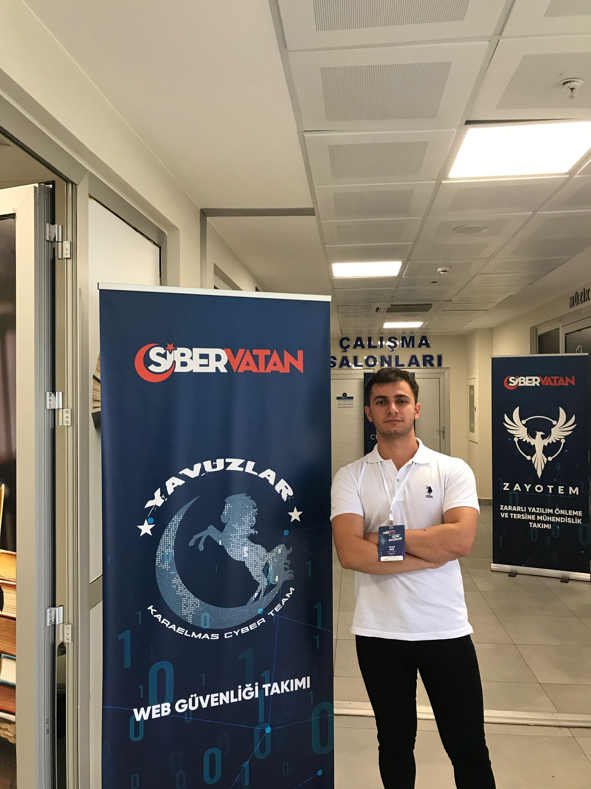
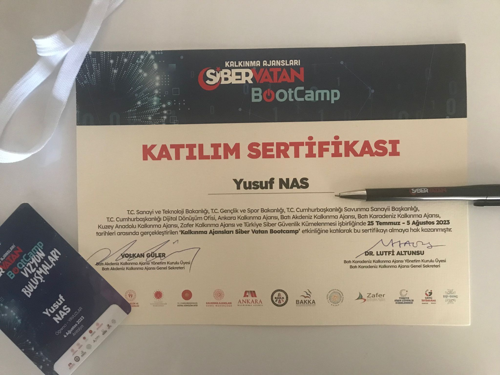

Yusuf
Merhaba, ben Yusuf. Zonguldak Bülent Ecevit Üniversitesi'nde Bilgisayar Mühendisligi 2. sınıf ögrencisiyim. Siber Güvenlik alanıyla ugrasıyorum. Siber Vatan Projesi kapsamında Yavuzlar takımında Web Güvenligi ile ilgili calısmalar yapıyoruz. PHP ve Golang dillerini kullanıyorum.
